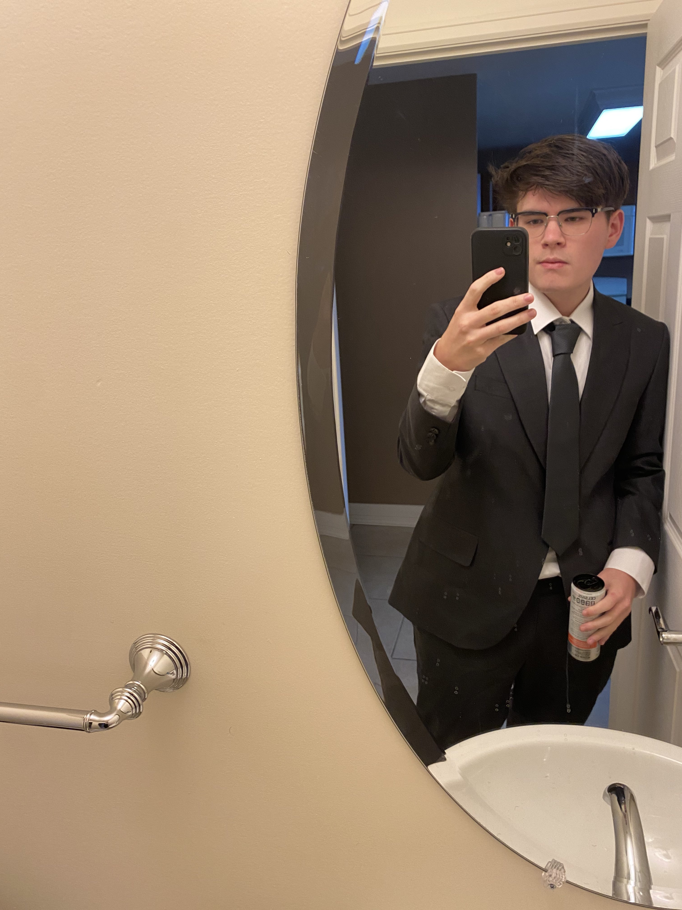
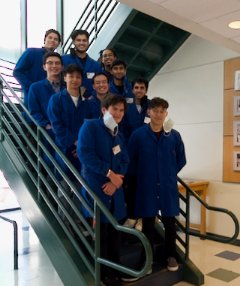
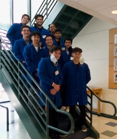
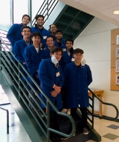
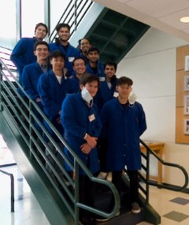

Portfolio

.png) 

The sound of drilling against the enamel of a cavity, a mirror used for a reflection, a relative in a chair, and me, a clueless eleven-year-old. Being an assistant for what seemed like a grotesque activity known as dentistry was never one of my first interests as a child. Knowing I was the cause of my cousins’ pain-stricken faces every time their cavity-infested mouths were worked upon seemed like an even better reason to not be so enamored with such a thing. But holding a mirror and a tool that either sprayed or sucked liquid out of their mouths was just the beginning of why I would like to become a dentist. I started at around eleven years old helping my father operate on the mouths of six relatives. At first, I felt like I was causing a ruckus inside the patient’s mouth because of the fact that all this was new to me. Mirrors used to see specific teeth never seemed to come out the same shape after I had used them. As I continued this work, I got better and became more interested in my duties, honing my skills. Some of the skills included learning how to pull teeth. To me, this was like a game that became increasingly more complex the further I delved into it.Once my cousins grew up and seemed to have no more work needed, another project arose: braces. By this time, I was already fourteen years old and felt like this was an easy task from my prior experience. However, their rubber bands and brackets often broke or flew out of my cousins’ mouths, which was surprising and daunting to me at first but I gradually got used to dealing with it. The difficulty of this new complex task only heightened my adventure as a dental assistant. After a year of my cousins coming over to my house every month, shiny, white teeth and impressive smiles were the fruits of my labor. What I discovered through this journey was a mirror for my future. I believe dentistry will challenge me and be rewarding for not only myself but others. In a metaphoric sense, I truly hope to bring smiles on peoples’ faces in whatever I do.Overall, I am a dedicated and driven individual with experience in community service and academic excellence, seeking a position where I can contribute my skills and knowledge to make a positive impact.
• managed employees in warehouse
• worked in a team environments
• Experience with being a leader
• Participated in mutiple events for the youth
• helped raise funds for charitable causes
• Assisted with general dental procedures in a private practice
• Followed up and communicated with patients
• Translated english and spanish between patients and the dentist
• Watched over operations and kept a calm environment
